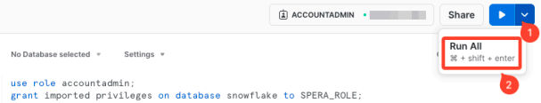

Snowflakeの統合
Identity Security Posture Management（ISMP）をSnowflakeアカウントに統合します。
公開鍵をダウンロードする
-
Identity Security Posture Managementコンソールでに移動します。
-
［Snowflake］を選択します。
-
［Download public key.txt（public key.txtのダウンロード）］をクリックして公開鍵を取得します。
Snowflakeユーザーを作成する
-
ACCOUNTADMINロールでSnowflakeにサインインします。
-
［Worksheets（ワークシート）］をクリックします。
-
［+］をクリックしてから、［SQL Worksheet（SQLワークシート）］を選択してSQLワークシートを追加します。
-
以下のSQLコマンドをコピーしてワークシートに貼り付けます。
コピー-- Switch to ACCOUNTADMIN role
use role accountadmin;
-- create a new role for the user
create role OKTA_ISPM_ROLE;
-- create a user for OKTA_ISPM
create user OKTA_ISPM_INTEGRATION RSA_PUBLIC_KEY = '<public key>';
-- grant read-only access to the system-defined, read-only shared database
grant imported privileges on database snowflake to OKTA_ISPM_ROLE;
-- grant `Usage` privilege on the default warehouse and system DB
grant usage on warehouse <warehouse> to role OKTA_ISPM_ROLE;
-- apply the role to the OKTA_ISPM user
grant role OKTA_ISPM_ROLE to user OKTA_ISPM_INTEGRATION;
-- Create a task that reads security integrations
CREATE DATABASE IF NOT EXISTS OKTA_ISPM;
CREATE OR ALTER TASK OKTA_ISPM.PUBLIC.READ_SECURITY_INTEGRATIONS
USER_TASK_MANAGED_INITIAL_WAREHOUSE_SIZE = "XSMALL"
ALLOW_OVERLAPPING_EXECUTION = FALSE
COMMENT = 'Okta ISPM Task for reading security integrations'
AS
DECLARE
integration_name VARCHAR;
BEGIN
SHOW SECURITY INTEGRATIONS;
CREATE OR REPLACE TABLE OKTA_ISPM.PUBLIC.SECURITY_INTEGRATIONS AS (
SELECT *
FROM TABLE(RESULT_SCAN(LAST_QUERY_ID()))
);
CREATE OR REPLACE TABLE OKTA_ISPM.PUBLIC.SECURITY_INTEGRATION_DESCRIPTIONS (
property VARCHAR,
property_type VARCHAR,
property_value VARCHAR,
property_default VARCHAR,
integration_name VARCHAR
);
LET integrations_cursor CURSOR FOR SELECT * FROM OKTA_ISPM.PUBLIC.SECURITY_INTEGRATIONS;
FOR current_integration IN integrations_cursor DO integration_name := current_integration."name";
DESCRIBE SECURITY INTEGRATION IDENTIFIER(:integration_name);
INSERT INTO OKTA_ISPM.PUBLIC.SECURITY_INTEGRATION_DESCRIPTIONS
SELECT
*,
:integration_name
FROM TABLE(RESULT_SCAN(LAST_QUERY_ID()));
END FOR;
END;
-- Create a task that reads the authentication policies
CREATE OR ALTER TASK OKTA_ISPM.PUBLIC.READ_AUTHENTICATION_POLICIES
USER_TASK_MANAGED_INITIAL_WAREHOUSE_SIZE = "XSMALL"
ALLOW_OVERLAPPING_EXECUTION = FALSE
COMMENT = 'Okta ISPM Task for reading authentication policies'
AS
DECLARE
policy_name VARCHAR;
policy_db VARCHAR;
policy_schema VARCHAR;
policy_full_name VARCHAR;
BEGIN
SHOW AUTHENTICATION POLICIES;
CREATE OR REPLACE TABLE OKTA_ISPM.PUBLIC.AUTHENTICATION_POLICIES AS (
SELECT *
FROM TABLE(RESULT_SCAN(LAST_QUERY_ID()))
);
CREATE OR REPLACE TABLE OKTA_ISPM.PUBLIC.AUTHENTICATION_POLICIES_DESCRIPTION (
property VARCHAR,
property_type VARCHAR,
property_value VARCHAR,
property_default VARCHAR,
policy_name VARCHAR
);
CREATE OR REPLACE TABLE OKTA_ISPM.PUBLIC.AUTHENTICATION_POLICIES_REFERENCES (
policy_db VARCHAR,
policy_schema VARCHAR,
policy_name VARCHAR,
policy_kind VARCHAR,
ref_database_name VARCHAR,
ref_schema_name VARCHAR,
ref_entity_name VARCHAR,
ref_entity_domain VARCHAR,
ref_column_name VARCHAR,
ref_arg_column_names VARCHAR,
data_database VARCHAR,
tag_schema VARCHAR,
tag_name VARCHAR,
policy_status VARCHAR
);
LET policies_cursor CURSOR FOR SELECT * FROM OKTA_ISPM.PUBLIC.AUTHENTICATION_POLICIES;
FOR current_policy IN policies_cursor DO
policy_db := current_policy."database_name";
policy_schema := current_policy."schema_name";
policy_name := current_policy."name";
policy_full_name := :policy_db || '.' || :policy_schema || '.' || :policy_name;
DESCRIBE AUTHENTICATION POLICY IDENTIFIER(:policy_name);
INSERT INTO OKTA_ISPM.PUBLIC.AUTHENTICATION_POLICIES_DESCRIPTION
SELECT
*,
:policy_name
FROM TABLE(RESULT_SCAN(LAST_QUERY_ID()));
INSERT INTO OKTA_ISPM.PUBLIC.AUTHENTICATION_POLICIES_REFERENCES
SELECT *
FROM TABLE(
SNOWFLAKE.INFORMATION_SCHEMA.POLICY_REFERENCES(
POLICY_NAME => :policy_full_name
)
);
END FOR;
END
;
-- Grants task related privileges
GRANT USAGE ON DATABASE OKTA_ISPM TO ROLE OKTA_ISPM_ROLE;
GRANT USAGE ON SCHEMA OKTA_ISPM.PUBLIC TO ROLE OKTA_ISPM_ROLE;
GRANT SELECT ON FUTURE TABLES IN DATABASE OKTA_ISPM TO ROLE OKTA_ISPM_ROLE;
GRANT EXECUTE TASK ON ACCOUNT TO ROLE OKTA_ISPM_ROLE;
GRANT OPERATE ON TASK OKTA_ISPM.PUBLIC.READ_SECURITY_INTEGRATIONS TO ROLE OKTA_ISPM_ROLE;
GRANT OPERATE ON TASK OKTA_ISPM.PUBLIC.READ_AUTHENTICATION_POLICIES TO ROLE OKTA_ISPM_ROLE;
-- Execute tasks
EXECUTE TASK OKTA_ISPM.PUBLIC.READ_SECURITY_INTEGRATIONS;
EXECUTE TASK OKTA_ISPM.PUBLIC.READ_AUTHENTICATION_POLICIES;
-- Get the account identifier
SELECT CONCAT(
(CURRENT_ORGANIZATION_NAME()),
'-',
(CURRENT_ACCOUNT_NAME())
) AS snowflake_account; -
<public key>を、先ほどダウンロードした公開鍵に置き換えます。
-
<warehouse>を、標準タイプでサイズがXSの任意のウェアハウスに置き換えます。
-
［Run All（すべて実行）］をクリックします。

-
結果タブからSNOWFLAKE_ACCOUNT識別子をコピーし、安全な場所に保管します。
パラメーターをISPMと共有する
-
Identity Security Posture Managementコンソールでに移動します。
-
［Snowflake］を選択します。
-
以下の値を入力します。
-
Username（ユーザー名）：CREATE USERコマンドで使用した値を入力します。OKTA_ISPM_INTEGRATIONがデフォルトのユーザー名です。
-
Role（ロール）：CREATE ROLEおよびGRANT ROLEコマンドで使用した値を入力します。OKTA_ISPM_ROLEがデフォルトのロールです。
-
Account（アカウント）：先ほどコピーしたSnowflakeアカウント識別子を入力します。
-
Warehouse（ウェアハウス）：先ほど使用したウェアハウスの名前を入力します。
-
-
［Submit（送信）］をクリックします。